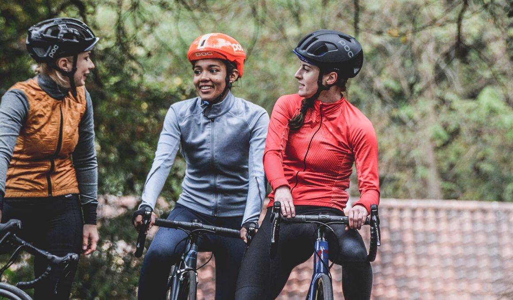

Alquiler de bicicletas

Nuestro servicio de alquiler de bicicletas está pensado para quienes desean explorar la ciudad con libertad, comodidad y al ritmo que prefieran. Contamos con bicicletas en buen estado, listas para usar, para que tengas una experiencia práctica y segura desde el primer momento.
- Libertad total para recorrer Medellín a tu propio ritmo.
- Ahorro en transporte y mayor flexibilidad en tus desplazamientos.
- Opciones cómodas y seguras para distintos tipos de usuarios.
Nuevo